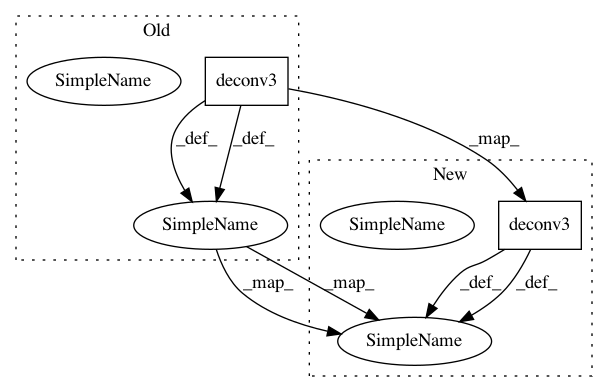

bbaf9028c1945cd6cba2b8582e77391dc9936aac,models/FlowNetS.py,FlowNetS,forward,#FlowNetS#,79
Before Change
concat4 = torch.cat((out_conv4,out_deconv4,flow5_up),1)
flow4 = self.predict_flow4(concat4)
flow4_up = self.upsampled_flow4_to_3(flow4)
out_deconv3 = self.deconv3(concat4)
concat3 = torch.cat((out_conv3,out_deconv3,flow4_up),1)
flow3 = self.predict_flow3(concat3)
flow3_up = self.upsampled_flow3_to_2(flow3)
out_deconv2 = self.deconv2(concat3)
concat2 = torch.cat((out_conv2,out_deconv2,flow3_up),1)
flow2 = self.predict_flow2(concat2)
if self.training:
After Change
concat4 = torch.cat((out_conv4,out_deconv4,flow5_up),1)
flow4 = self.predict_flow4(concat4)
flow4_up = crop_like(self.upsampled_flow4_to_3(flow4), out_conv3)
out_deconv3 = crop_like(self.deconv3(concat4), out_conv3)
concat3 = torch.cat((out_conv3,out_deconv3,flow4_up),1)
flow3 = self.predict_flow3(concat3)
flow3_up = crop_like(self.upsampled_flow3_to_2(flow3), out_conv2)
out_deconv2 = crop_like(self.deconv2(concat3), out_conv2)
concat2 = torch.cat((out_conv2,out_deconv2,flow3_up),1)
flow2 = self.predict_flow2(concat2)
if self.training:
In pattern: SUPERPATTERN
Frequency: 3
Non-data size: 2
Instances
Project Name: ClementPinard/FlowNetPytorch
Commit Name: bbaf9028c1945cd6cba2b8582e77391dc9936aac
Time: 2017-11-29
Author: clement.pinard@parrot.com
File Name: models/FlowNetS.py
Class Name: FlowNetS
Method Name: forward
Project Name: abhiskk/fast-neural-style
Commit Name: e1139033f3fc865faade3403b378f84089b4f474
Time: 2017-04-03
Author: abhishekkadiyan@gmail.com
File Name: neural_style/transformer_net.py
Class Name: TransformerNet
Method Name: forward
Project Name: abhiskk/fast-neural-style
Commit Name: 152b49f8a0660f941c119cd9392a5a5d2d9478b5
Time: 2017-03-14
Author: abhishekkadiyan@gmail.com
File Name: neuralstyle/transformernet.py
Class Name: TransformerNet
Method Name: forward